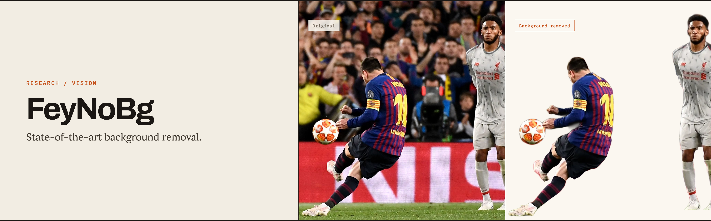

THE FRONT PAGE
EDITOR'S NOTE: As automated synthesis rapidly outpaces architectural discipline, true engineering authority remains with those who insist on inspecting the foundations before agreeing to build higher. #Open-weight transparency vs. systemic software decay
BREAKING VECTORS

The pragmatic case for open weights in an era of opaque systems
Releasing model weights restores the inspectability long lost to closed APIs, though it forces teams to manage safety downstream without central kill switches. It’s a messy trade-off, but one that gives software engineers back a fragment of their diagnostic autonomy.

NEURAL HORIZONS
LAB OUTPUTS

FeyNoBg releases open-source background segmentation model with training pipeline
Fey released FeyNoBg, an open-source model and training library aimed at automated background removal. While it offers engineers direct control over fine-tuning for niche edge cases, self-hosting vision pipelines introduces latency and compute overhead compared to established off-the-shelf APIs.
Distilling Python to a Single Binary
Packaging Python into self-contained, highly portable distributions cuts dependency overhead, though it introduces non-trivial cross-platform compilation trade-offs. It is a quiet step toward restoring deterministic builds in an era dominated by sprawling, fragile runtime environments.
INFERENCE CORNER
Apple Silicon Inference Benchmarks Offer Raw Data Over Vendor Claims
A fresh dataset quantifies local LLM throughput across M-series chips, trading speculative architectural hype for actual tokens per second. While unified memory makes local execution surprisingly practical, the data highlights severe memory bandwidth bottlenecks once context windows expand.
Telnyx Adds Kimi K3 to Inference Roster
Telnyx is now routing Moonshot's Kimi K3 model, giving developers another off-the-shelf endpoint for foreign weights. It spares teams the headache of hosting infrastructure, though inserting a middleman into the inference path leaves you with latency spikes you can measure but never fix.